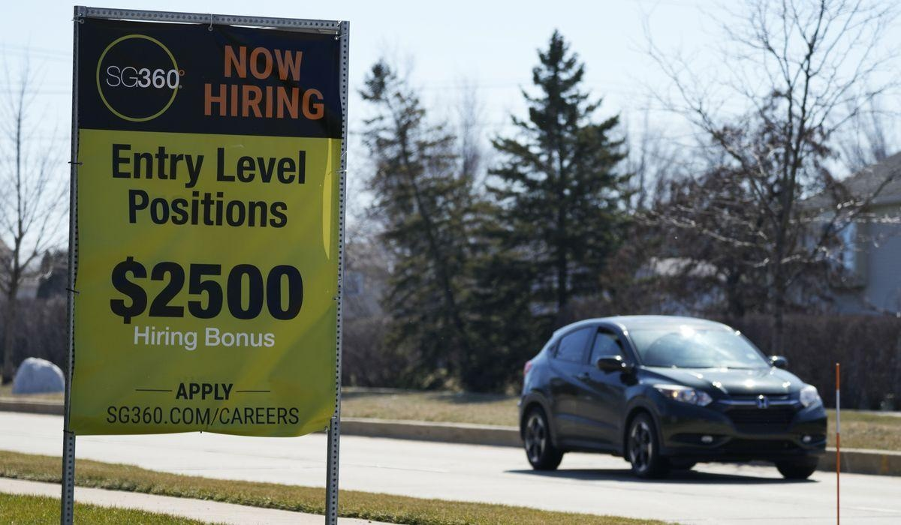

More Americans apply for jobless benefits, but layoffs are not rising significantlyThe number of Americans applying for jobless benefits rose last week, but remains at healthy levels despite the Federal Reserve’s attempt to cool the labor market by raising interest rates. U.S. applications for jobless claims rose by 12,000 to 248,000 for the week ending July 1, from 236,000 previous week, the Labor Department reported Thursday. The four-week moving average of claims, which evens out some of the week-to-week volatility, fell by 3,500 by 253,250. Jobless claim applications are seen as a proxy for the number of layoffs in a given week. For three weeks in late May and early June, jobless claims had appeared to reach a sustained, higher level, above 260,000. Even so, that increase may not have been enough for Fed officials to pivot from raising its main rate at its next meeting. The U.S. economy has added jobs at a furious pace since more than 20 million jobs vanished when the COVID-19 pandemic hit in the spring of 2020. Americans have enjoyed unusual job security as companies have been reluctant to shed staff in a worker-friendly labor environment. U.S. employers added a better-than-expected 339,000 jobs in May, surprising economists and painting a mostly encouraging picture of the labor market, even though the unemployment rose to a still-healthy 3.7%. Fed officials have said that the unemployment rate needs to rise well past 4% to bring inflation down. The June jobs report, with a far more expansive set of labor data for the Fed to consider, is due out Friday. Analysts surveyed by FactSet expect the economy added about 205,000 jobs. However, the payroll processor ADP on Thursday said its survey showed employers added 497,000 jobs in June, nearly twice as many as analysts were expecting. That sent markets lower before the bell on the perception that the odds of new rate hikes just went up when the Fed meets later this month. For the most part, the U.S. economy has been been resilient in the face of the Federal Reserve’s aggressive rate-hiking campaign in its effort to extinguish persistent inflation not seen since the early 1980s. The rate hikes have slowly helped to suppress inflation, though perhaps not as quickly as the Fed had hoped. Last week, the government said the U.S. economy grew at a 2% annual pace from January through March, much higher than the previous estimate of 1.3%. That, combined with a resilient labor market, will likely push Fed officials to go through with another rate hike or two before the end of the year as it continues to try to bring down stubborn inflation. In June, Fed officials chose not to increase the central bank’s benchmark borrowing rate for the first time in 15 months, though some said they expect to add another half-point to rates by the end of the year. There have been a number high-profile layoffs recently, mostly in the technology sector, where many companies acknowledging they hired too many people during the pandemic. IBM, Microsoft, Salesforce, Twitter, Lyft, LinkedIn, Spotify and DoorDash have all announced layoffs in recent months. Amazon and Facebook parent Meta have each announced two sets of job cuts since November. Outside the tech sector, McDonald’s, Morgan Stanley and 3M have also recently announced layoffs. The manufacturing sector has been contracting and the real estate sector has suffered because of higher interest rates. Three bank failures also have been blamed in part on higher interest rates. Overall, 1.72 million people were collecting unemployment benefits the week that ended June 24, 13,000 fewer than the previous week. Please read our comment policy before commenting. |
 |